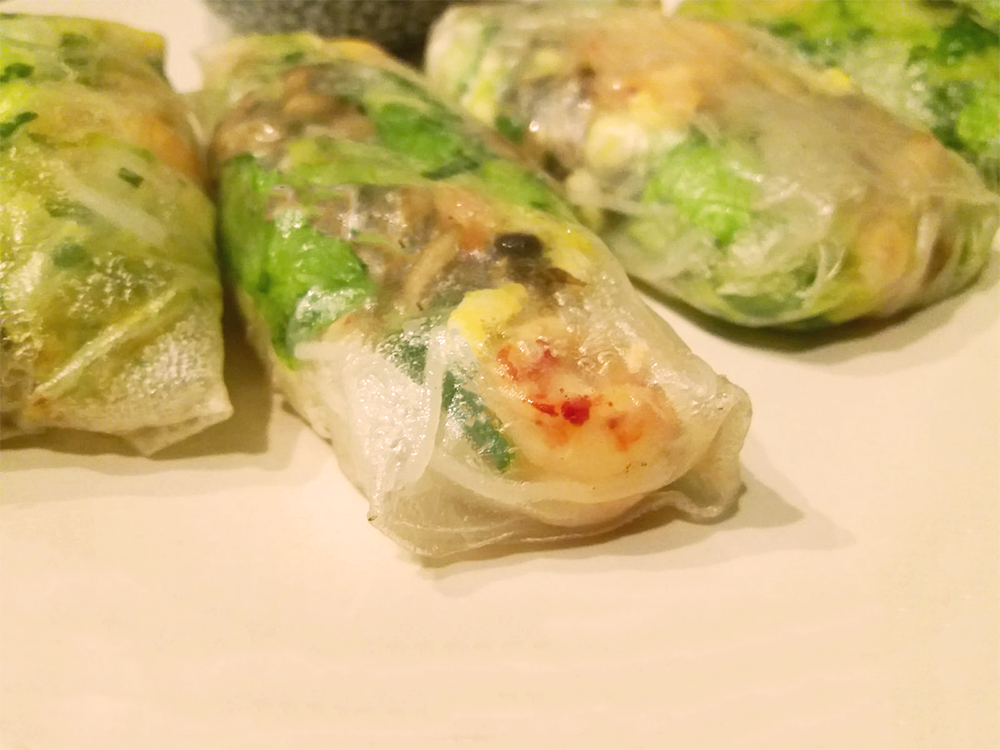

vietnamese pannenkoeken (banh xeo)

macedonische shopska salade

hawaiiaanse poké bowl
avocado salade

arabische falafel

bieten carpaccio

gnocchi

coq au vin

kokossoep
paksoi noedels met garnalen
franse bouillabaisse

thaise noedels (pad thai)
vietnamese summer rolls
Het maken van deze loempia's is eventjes veel werk maar als alles op rolletjes loopt mag het resultaat er zijn! Tip: je kan eindeloos variëren met de ingrediënten. Voeg bijvoorbeeld paprika, taugé of avocado toe!
Traditioneel worden deze summer rolls rauw gegeten maar uit de airfryer zijn ze ook lekker én warm! Genoeg voor 10 rolletjes.

Bereidingsduur: 30 minuten
Aantal personen: 10
Ingrediënten:
10 rijstvellen
1/4 stuk komkommer
75 gram mihoen
200 gram ijsbergsla
125 gram champignons
2 stuks ei
naar smaak chilisaus
naar smaak hoisin saus
100 gram rivierkreeftjes
100 gram hollandse garnalen
10 rijstvellen
1/4 stuk komkommer
75 gram mihoen
200 gram ijsbergsla
125 gram champignons
2 stuks ei
naar smaak chilisaus
naar smaak hoisin saus
100 gram rivierkreeftjes
100 gram hollandse garnalen
Instructies:
1. Snijd alle groenten heel klein zodat deze niet door de rijstvellen heen prikken.
2. Breng water aan de kook, doe de mihoen in een kom en giet er zo veel kokend water over tot het onder water staat. Laat 3 minuten wellen. Spoel daarna af in een vergiet met koud water en laat uitlekken.
3. Bak in een koekenpan de geklutste eieren en de champignons.
4. Dompel de rijstvellen heel eventjes een voor een in een grote kom met lauwwarm water. Pas op dat deze niet scheuren! Schud droog en leg het zachte rijstpapier op een schone ondergrond.
5. Vul de rijstvellen met de ingrediënten en vouw dicht.
6. Optioneel kun je de loempiaatjes 3 minuten in de airfryer doen, daar worden ze lekker knapperig van!
7. Dip ze in wat chilisaus of sojasaus en klaar!
1. Snijd alle groenten heel klein zodat deze niet door de rijstvellen heen prikken.
2. Breng water aan de kook, doe de mihoen in een kom en giet er zo veel kokend water over tot het onder water staat. Laat 3 minuten wellen. Spoel daarna af in een vergiet met koud water en laat uitlekken.
3. Bak in een koekenpan de geklutste eieren en de champignons.
4. Dompel de rijstvellen heel eventjes een voor een in een grote kom met lauwwarm water. Pas op dat deze niet scheuren! Schud droog en leg het zachte rijstpapier op een schone ondergrond.
5. Vul de rijstvellen met de ingrediënten en vouw dicht.
6. Optioneel kun je de loempiaatjes 3 minuten in de airfryer doen, daar worden ze lekker knapperig van!
7. Dip ze in wat chilisaus of sojasaus en klaar!